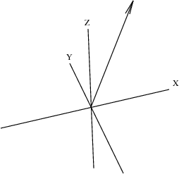

10.4 Points, Lines, and Curves
What you have seen so far is a high-level program using the graphics facility. We now turn to the more basic notions of points, lines, and curves in three-dimensional graphs. These facilities use small floats (objects of type DoubleFloat) for data. Let us first give names to the small float values
0 and
1.
The small float 0.
The small float 1.
The @ sign means of the type. Thus
zero is
0.0 of the type DoubleFloat. You can also say
0.0::DFLOAT.
Points can have four small float components:
x,y,z coordinates and an optional color. A curve is simply a list of points connected by straight line segments.
Create the point
origin with color zero, that is, the lowest color on the color map.
origin := point [zero,zero,zero,zero]
Create the point
unit with color zero.
unit := point [one,one,one,zero]
Create the curve (well, here, a line) from
origin to
unit.
We make this line segment into an arrow by adding an arrowhead. The arrowhead extends to, say,
p3 on the left, and to, say,
p4 on the right. To describe an arrow, you tell FriCAS to draw the two curves
[p1,p2,p3] and
[p2,p4]. We also decide through experimentation on values for
arrowScale, the ratio of the size of the arrowhead to the stem of the arrow, and
arrowAngle, the angle between the arrowhead and the arrow.
Invoke your favorite editor and create an input file called arrows.input. This input file first defines the values of
arrowAngle and
arrowScale, then defines the function makeArrow
(p1,p2) to draw an arrow from point
p1 to
p2.
arrowAngle := %pi-%pi/10.0@DFLOAT The angle of the arrowhead.
arrowScale := 0.2@DFLOAT The size of the arrowhead
relative to the stem.
makeArrow(p1, p2) ==
delta := p2 - p1 The arrow.
len := arrowScale * length delta The length of the arrowhead.
theta := atan(delta.1, delta.2) The angle from the x-axis
c1 := len*cos(theta + arrowAngle) The x-coord of left endpoint
s1 := len*sin(theta + arrowAngle) The y-coord of left endpoint
c2 := len*cos(theta - arrowAngle) The x-coord of right endpoint
s2 := len*sin(theta - arrowAngle) The y-coord of right endpoint
z := p2.3*(1 - arrowScale) The z-coord of both endpoints
p3 := point [p2.1 + c1, p2.2 + s1, z, p2.4] The left endpoint of head
p4 := point [p2.1 + c2, p2.2 + s2, z, p2.4] The right endpoint of head
[ [p1, p2, p3], [p2, p4] ] The arrow as a list of curves
Read the file and then create an arrow from the point
origin to the point
unit.
Read the input file defining makeArrow.
Construct the arrow (a list of two curves).
arrow := makeArrow(origin,unit)
Create an empty object
sp of type
ThreeSpace.
Add each curve of the arrow to the space
sp.
for a in arrow repeat sp := curve(sp,a)
Create a three-dimensional viewport containing that space.
vp := makeViewport3D(sp,"Arrow")
Here is a better viewing angle.
